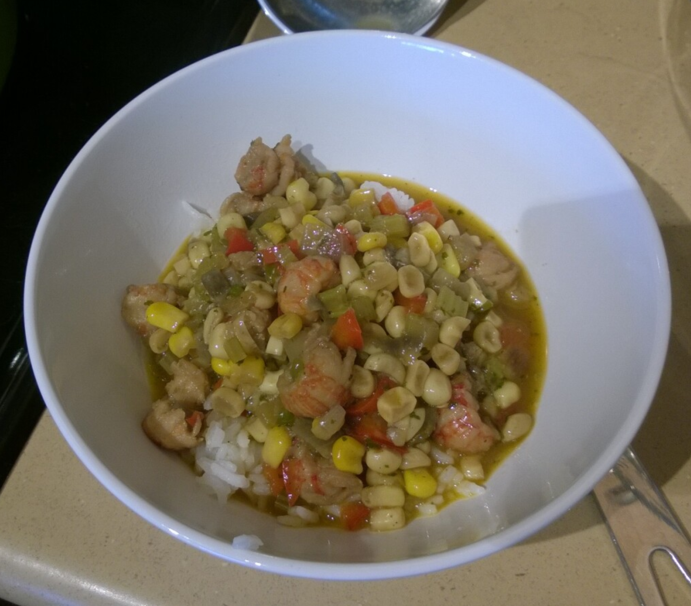

Shrimp & Corn Macquechoux

Ingredients
Corn
- 12 ears corn or 3 lbs of frozen whole kernel corn (it matters)
- 1 large onion, chopped
- 1 stalk celery with leaves
- 1 bell pepper, chopped
- 3 cloves garlic, chopped
- 1 banana or Anaheim pepper
- 2 Jalapeno peppers
- 2 tbs peanut oil or bacon grease
- 1 tbs butter
- 2 cans Rotel tomatoes
- 1½ tsp salt
- ¼ tsp black pepper
- 1 tbs sugar
- 1 tsp Louisiana Hot Sauce
- 2 tbs flour (Optional)
Shrimp
- 2 lb head-on shrimp, peeled and deveined
- 1 tbs olive oil
- 1 tsp salt
- ½ tsp white pepper
- ½ tsp Accent
- 1 tsp sugar
- 1 tbs rice wine
- 1 tbs soy sauce
- Cajun seasoning and red pepper flakes to taste
Directions
Shrimp
- Peel shrimp and save heads and shells in a small stock pot.
- Marinate peeled shrimp in salt, white pepper, Accent, soy sauce, and rice wine.
- Cover the shells and heads with water, add one stalk of celery and red pepper flakes and bring to a boil over medium heat. Reduce heat and simmer until reduced by half.
- When the stock is reduced, strain through a medium mesh sieve and return the strained stock to the pot.
- Return the stock to a boil and parboil the shrimp for 30-60 seconds. You'll need to do this in batches.
- Reserve shrimp and stock
Corn
- Remove corn kernels from cob using a sharp knife.
- When the kernels are removed, scrape the length of the cob with the back edge of the knife to extract any remaining liquid. This liquid will
add great flavor and assist in the thickening process.
- Heat peanut oil and butter in a large black iron skillet over medium high heat until the butter is melted.
- Add onions, garlic, and bell pepper and sauté until limp, about 5 minutes. If you want a thicker
sauce, add the flour here and singe for a minute or so.
- Add the remaining ingredients and cook for about 5 minutes.
- Add about 1½ C of the reserved poaching stock, reduce heat, cover and simmer for 15-20 minutes or until the corn is tender.
- Once the corn is ready, remove from heat and add reserved shrimp.
- Cover and let steep for about 30 minutes or until ready to serve
Michael Fritsche
mbf@fritsche.org